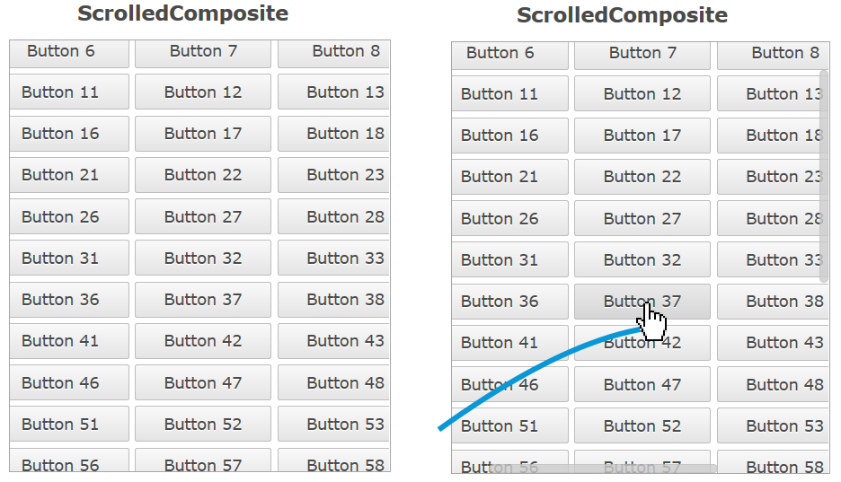

In the default theme the Scroll Bars now have a more modern look and feel. They are invisible until they are "activated" by the user, which is when the indicators fade-in to a semi-transparent state.
This is achieved with a number of new theming options. The opacity property let's you make the entire Scroll Bar (semi) transparent, with the content below visible. In addition, the new active state is used to indicate that the scrollable area is hovered with the mouse, or that the user is scrolling using the keyboard. Already added in M2 was the feature that the up/down (or left/right) buttons disappear if no image is set for them.
If you don't like the new look and feel, don't worry. The business theme makes no changes to the Scroll Bars, and by making a theme-contribution you can easily adjust the opacity for the active and non-active states to be different values (e.g. "1" for both) and/or change the Scroll Bar background from "transparent" back to a solid color.
The Row Templates that can be applied to Table and Tree now also work with the Nebula Grid.